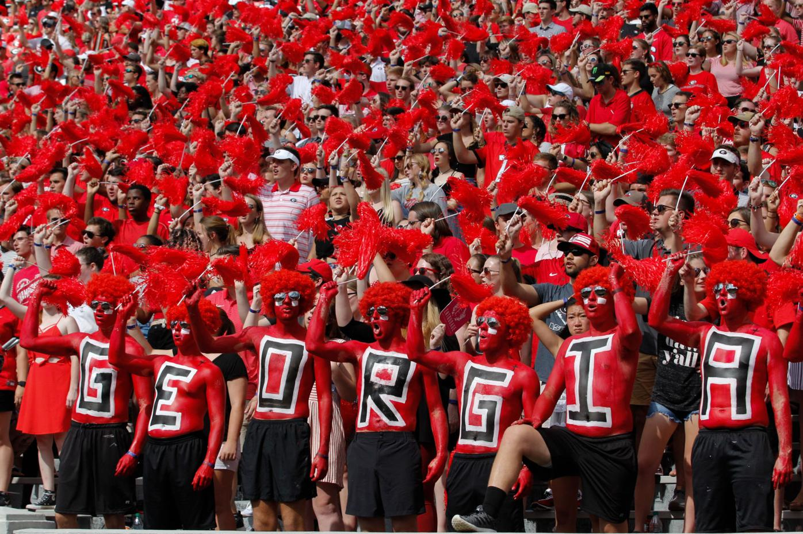
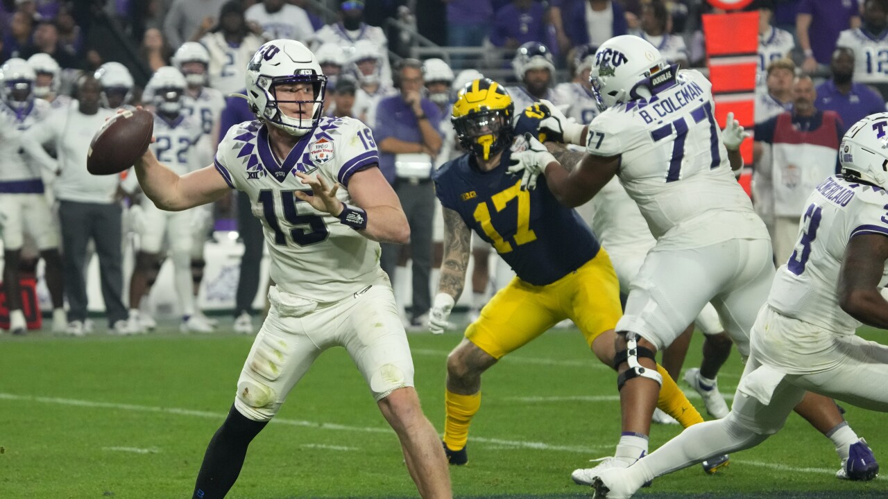

Attendance in College Football is Dropping
By Dennis Dodd February 24, 2022
Even the best teams and conferences across college football saw attendance drops this season
This story has been reproduced as part of coursework for the Philip Merrill College of Journalism at the University of Maryland. It was originally published in CBS Sports.
At Arkansas, there is a simple solution to college football's ongoing attendance crisis: Just win (big), baby.
Razorback Nation has wrapped its heart around coach Sam Pittman to the point Arkansas had the second-highest attendance gain among FBS teams in 2021, a whopping 14,353 fans per game, compared to the last full season in 2019. The Hogs are coming off their best season in a decade (9-4) after starting 4-0, a run that included the first win over Texas at home in 40 years.
Arkansas is also an extreme outlier. FBS attendance last season hit its lowest point in those same four decades years, according to annual figures compiled by the NCAA. The average for the division's 130 teams slipped to 39,848 fans per game. That's the fewest since 1981 when the average was 34,621.
Nationally, the average attendance in 2021 was down 15%, more than 7,000 per game, from a record mark of 46,971 in 2008.
There are exacerbating factors. Most notable are a disquieting return for some fans concerned about large crowds and COVID-19 and a growing list of small-stadium bandwagon jumpers moving up from FCS to FBS. It's also easier and less expensive to watch games on TV at home.
However, it's bigger than that for a trend that continues to define the sport in the 21st century, according to SEC commissioner Greg Sankey.
"There's plenty of, if you will, negativity around the collegiate sports world," he said. "People have said, 'Well, these decisions won't affect fan interest.' Well, something certainly is. It's not just TV. It's not just COVID. We have to rethink our approach on key issues. That's almost a Captain Obvious moment."
In this age of name image and likeness rights, the transfer portal and court battles, this serves as a reminder that the game is not too big to fail.
September games sometimes start in the heat of midday to accommodate networks. Some schools are still building out stadium bandwidth so fans can use their mobile phones in the stands. In general, colleges can't easily build a new stadium to replace an antiquated one given their constrained campus footprints. As such, renovations rule the day, but not everyone can spend $500 million, like Texas A+M did, on a stadium expansion. It also remains a struggle to attract students.
"In some ways, the game doesn't cater to the fan who chooses to attend the game in-person," said Chris Bevilacqua, one of the most respected sports media consultants in the industry.
It still might come down to the basics. For an aging fan base facing rising ticket, parking and concession prices, it's easy to go to a default setting on game day. For younger fans with shorter attention spans, it's about keeping their attention, period.
"We really are competing against the 70-inch TV and the beer that is cold in your refrigerator and no lines at the restroom," Big 12 commissioner Bob Bowlsby said. "We have to continue to make sure we enhance the game day experience."
Last season marked the seventh straight year and ninth year in the last 10 that FBS attendance has declined. The NCAA has been tracking FBS attendance since 1976, two years before then-Division I-AA (Football Championship Subdivision) was created.
The per-game national decline of 1,629 fans in 2021 is the steepest ever, a 3.93% drop from 2019. The NCAA did not compile attendance statistics from the COVID-19-impacted 2020 season for the first time since it began keeping overall attendance figures in 1948. The 2021 numbers include attendance at home, neutral-site and bowl games.
The decrease spared no part of the country. More of the half of the teams in the final AP Top 25 saw attendance declines, including eight of the top 10. For the seventh consecutive year, a majority of FBS conferences (seven of 10) declined in attendance. Compare that to 2010 when only the Pac-12 saw fewer fans attend games among the major conferences.
In 2021, only the Big Ten experienced attendance gain among the Power Five conferences. Michigan led the country in attendance for the fifth year in a row and for the 21st time in the last 22 seasons.
For the 23rd consecutive year, the SEC led the country in attendance with 72,195 fans per game. Still, the nation's most football crazy league was not immune from the trend. The SEC suffered an attendance decline for a fifth consecutive year since an all-time high of 78,630 in 2015. Even though the average decline from 2019 was minimal (528 fans per game), the SEC posted its lowest average attendance since 1999.
Nine of the league's 14 teams experienced attendance declines ranging to the curious to the profound. In a championship year, Georgia lost attendance, though it was microscopic drop of 71 fans per game. South Carolina was down more than 8,000 fans per game (coming off a 4-8 season in 2019) despite a bounce back campaign that saw coach Shane Beamer finish 7-6.
At Arkansas, there isn't much worry about attendance in the moment. Only Rutgers, up 14,458 fans per game, had a higher average increase in 2021. Arkansas' second-ranked baseball team just drew 30,000 for a three-game series with Illinois State. Eric Musselman's basketball team just saw 19,000 attend a Saturday win against Tennessee.
Razorback Stadium was raucous again in 2021, filled with an average of 65,284 fans, a record at least since the venue was expanded in 2018. Projected 2022 season tickets (45,000) are up more than 10,000 from two years ago, a disastrous 2-10 season. Ticket revenue is projected to be up to $36 million from $10 million.
Armed with that hype and promise, the 2022 home schedule could be its own Netflix documentary; Alabama, Ole Miss and LSU come to town with Bobby Petrino returning alongside his Missouri State team.
"It just all kind of fell into place this year," Arkansas athletic director Hunter Yurachek said. "Quite honestly, this has to do with our fan base being the only Power Five team in the state with no other professional team in the state."
There are only a handful of schools that fit that profile. And, yes, winning fills seats. Duh, right? Not necessarily in a sport that in the best of times has trouble defining trends.
Despite a down 2019, South Carolina had a home schedule that included Auburn, Clemson and Florida. After firing Will Muschamp in 2020, the Gamecocks were better in 2021, but the home schedule also included Eastern Illinois, Troy and Vanderbilt. That contributed to a drop of 8,228 per game at Williams-Brice Stadium, fifth-largest decrease in the country and biggest in the SEC.
Ole Miss posted its first 10-win regular season. There shouldn't be any surprise that the combination of success and the colorful Lane Kiffin led to 8,239 more fans in the stands per game (third-highest increase nationally). The Rebels went from an 18-year low attendance mark in 2019 (48,233) to more than 56,000 in 2021.
Still, success does not always bring out the fans. In conference championship seasons, Michigan, Cincinnati and Baylor all lost attendance. ACC attendance overall is down almost a quarter (23.5%) since an all-time high in in 2004 (55,735 per game). During that time, the league grew its footprint in realignment and averaged more than one New Year's Six bowl per year while Clemson became a national power.
The national attendance dip remains both real and ongoing. Administrators have long been concerned about retaining students. If students don't go to games, they have less of an emotional attachment when it comes to giving back to their alma mater in their peak earning years.
The Red and Black
“Look at the 25-40 age range. "They're more inclined to give their donation dollars to someplace other than athletics. They aren't quite inclined to commit to six Saturdays in the fall."
- Bob Bowlsy, Big 12 Comissioner
TV continues to be a prohibitive favorite over butts in seats on some game days. There is a reason, in the next three years, the Big Ten, Big 12 and Pac-12 are expected to hit it big in media rights negotiations. A new SEC deal with ESPN/ABC begins in 2024.
"I've even caught myself sometimes during a season [where] I don't want to go to a game because I like to watch three or four games that are on television," said Todd Berry, executive director of the American Football Coaches Association.
Of the in-game experience, Berry had a similar complaint as the average fan: "It's going to end up being 30 snaps and this long commercial break. … There's only so many times you can watch college students roll around in some big blow-up ball [on the field during those breaks] … before it starts losing its entertainment value."
Some of COVID-19's impact continued in 2021, but that can only be measured psychologically. While a large majority of stadiums were open to 100% capacity coming out of the 2020 pandemic year, there was surely a segment of fans who had concerns about being in large crowds.
Dragging the average down is the 15 teams that have joined FBS since 2000. The average capacity of those stadiums is slightly more than 30,000 … or less than a Midnight Yell at Texas A&M. None of those schools are in a Power Five league nor have any been to a major bowl. Since 1988, FBS has grown by 25% from 104 to 130 schools.
College football has not reached the "glut" stage where this is too much content on the airwaves, according to industry sources. That's a major criticism of college basketball as viewership is heavily focused on March Madness.
Football remains healthy on television. Thirteen of the top 14-rated primetime telecasts in 2021 were NFL games, according to Sports Media Watch. The top-rated college football game came in at No. 15; it was the College Football Playoff semifinal between Clemson and Ohio State. Last season's CFP National Championship, Alabama vs. Ohio State, finished No. 16. No other college game appeared in the top 100.
The 2022 CFP semifinals were the lowest rated since 2014, the year the playoff debuted. Last month's CFP National Championship between Alabama and Georgia saw ratings rise from the prior year, which was the least-watched championship game of the BCS era (since 1998), according to Sports Media Watch.
WPTV
"No one is going to need to throw a benefit for the networks anytime soon," a veteran sports TV executive told CBS Sports said. "If it were so bad, people wouldn't be clamoring for the rights to these games. You also have the fact that the interest in gaming is on the rise."
Bevilacqua is one of the leading voices in that area as well. Fifteen years ago, he helped develop what eventually became CBS Sports Network. His latest venture is Simplebet, a platform that allows fans to place "micro bets" -- real time wagers on whether the next pitch is a ball or strike, whether Patrick Mahomes will hand it off or pass. Micro-betting is the future as more states allow single-game betting. It also doesn't necessarily enhance the in-stadium experience.
"The generation of fans that aren't really watching TV anymore, they're on mobile devices. That's really where the marketing of the sport has to go," Bevilacqua said. "You've got to market a whole new fan base that isn't watching their televisions."
In theory, the rise of gaming on phones could help the in-game experience, according to R.J. White, managing editor of SportsLine, a gambling and fantasy sports website owned by CBS Sports.
"There's a big difference between betting on a college football game and betting on the Super Bowl," White said. "If this was the Super Bowl, there are so many props, so much attention paid to it. You're not going to get that for most college games. … That's where the fun comes in, being engaged in the sports sphere for three hours by being able to bet events in the game."
"It's such a hassle to park and pay for [games]," he added. "It's a fun experience being at a game with 50,000 of your closest friends cheering for a team. But in terms of watching a game, it's much better to do it at home."
At home, there is less worry about kickoff times, which are sometimes set by networks as few was six days in advance. That makes it more difficult for fans to plan in advance. Alabama AD Greg Byrne and Oklahoma AD Joe Castiglione have complained about 11 a.m. CT starts impacting attendance.
In the end, those rightsholders are paying millions of dollars so they can dictate those kickoff times. Games start in the most advantageous windows for networks to show ads and get ratings, thus recouping the millions they pay for those rights.
In that case, it seems like the in-person fan is almost a secondary consideration. Just don't tell Arkansas.
"We had people that have people that travel across our state for an 11 o'clock game," Yurachek said. "You're talking about driving across states 3-4-5 hours. That's an all-day commitment."